Scenography Production
Production support for high jewellery presentations, private client experiences and refined brand environments.
Luxury Scenography · Technical Production
Artisfaction supports high jewellery presentations, maison environments, private client experiences and luxury scenography setups across the region.
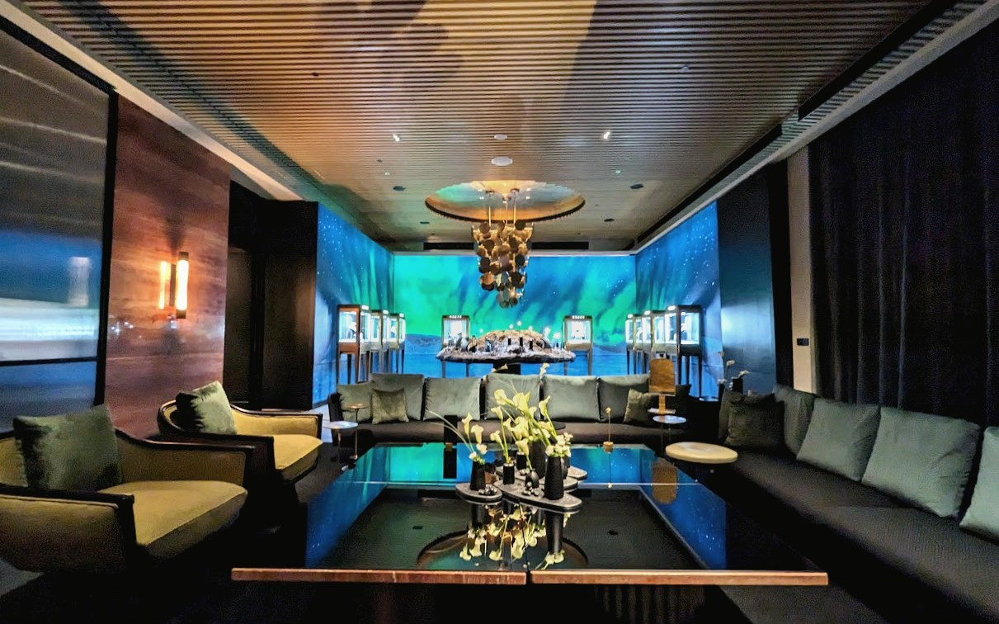
Luxury scenography is built through quiet decisions: material tone, lighting behaviour, sightline, structure, access, timing and the final guest-facing finish.
We work behind the scene to translate creative intent into a physical environment that feels calm, precise and complete.
For maisons, high jewellery teams, private clients and agencies who need calm technical direction without unnecessary noise.
Production support for high jewellery presentations, private client experiences and refined brand environments.
Feasibility, layout review, build sequence, technical requirements and site readiness.
Access, loading, power, contractor movement, installation flow and build supervision.
Workshop checks, material direction, sample review and production timeline follow-up.
Display alignment, lighting, surface finish, cleanliness and guest-facing presentation.
Vendor timing, crew briefing, troubleshooting, handover and teardown coordination.
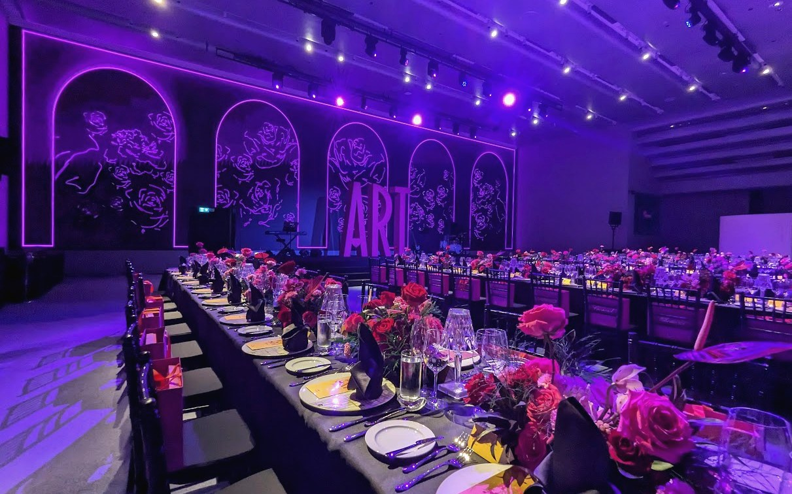
From Production To Experience
The guest sees the final atmosphere. Behind it is production control: structure, lighting, finish, installation sequence, site movement and readiness.
A curated look at relevant details only: finished atmosphere, scenography build, fabrication, material choices, technical checks and handover.
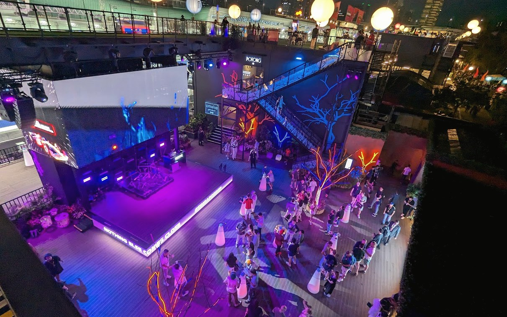
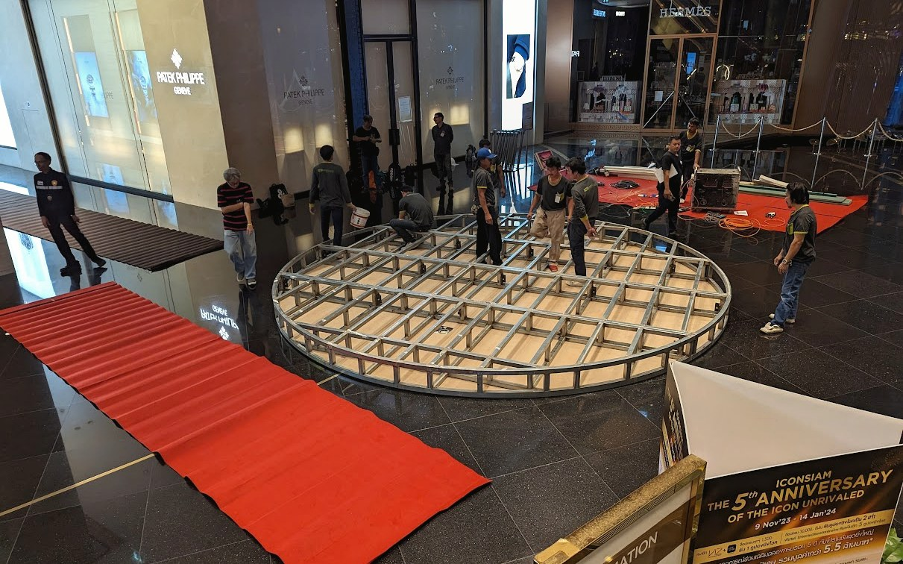
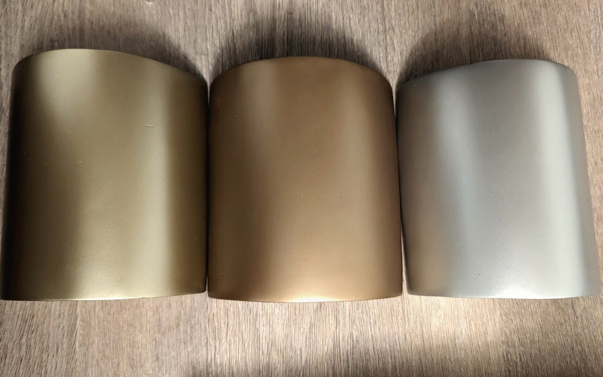
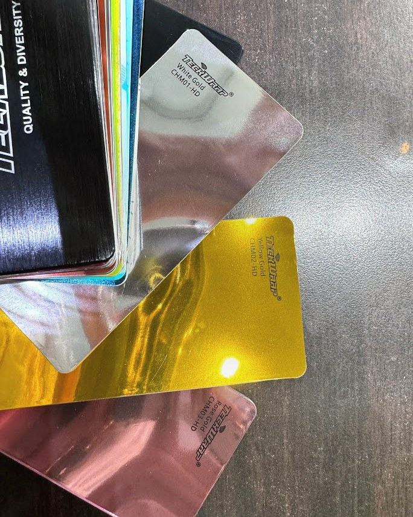
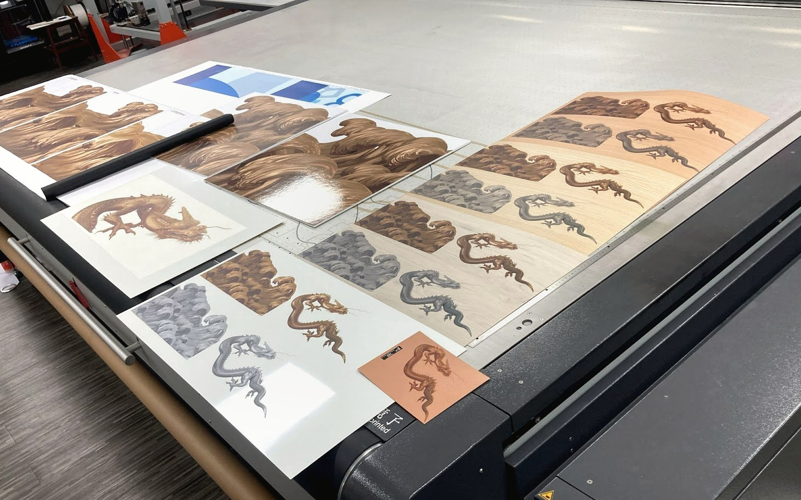
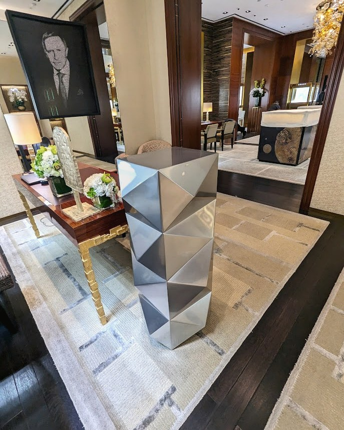
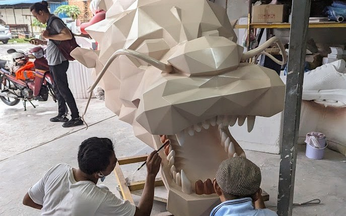
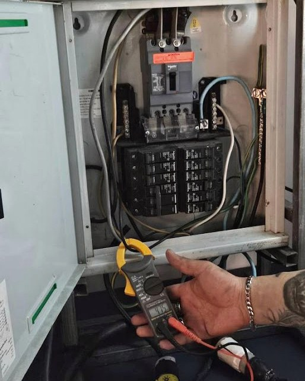
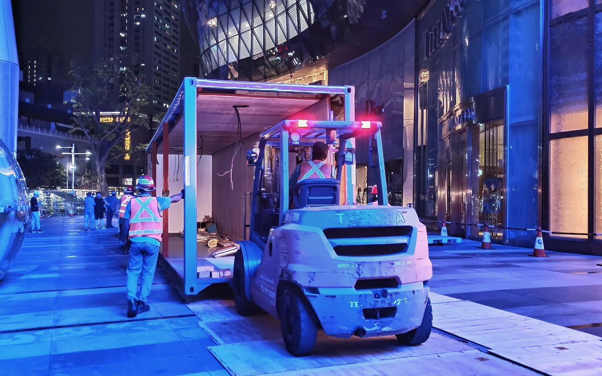
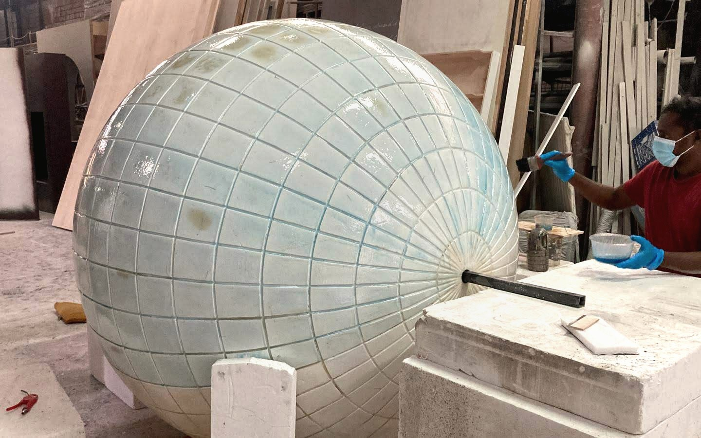
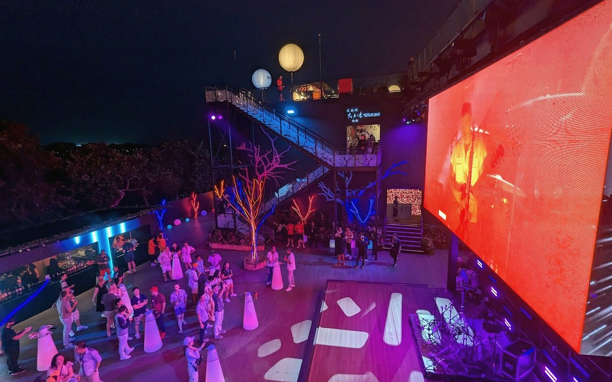
Simple, structured and site-ready.
Good scenography feels effortless because the difficult parts have already been solved.
Contact
Speak to Artisfaction for scenography production support, fabrication coordination, site planning and refined on-ground execution across the region.
Artisfaction Pte. Ltd.
60 Paya Lebar Road
#06-28 Paya Lebar Square
Singapore 409051